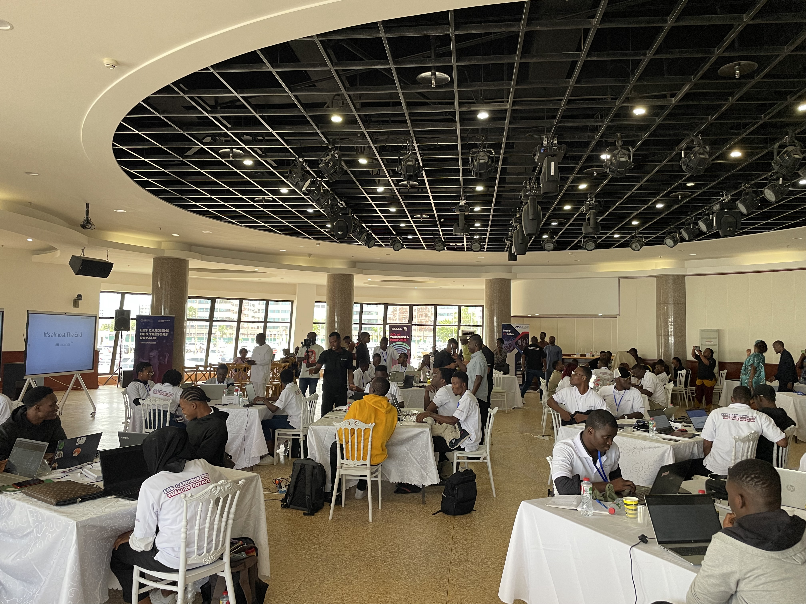
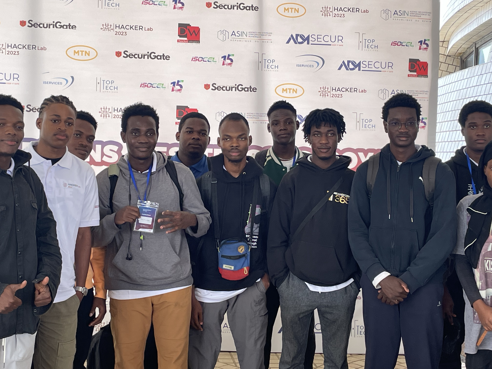

Chaque année, l'ASIN organise une compétition de cybersécurité dans le but de repérer de jeunes talents passionnés par ce domaine. Comme à l'accoutumée, la phase de préqualification s'est déroulée tout au long du mois d'août. À l'issue de cette phase, 20 équipes ont été sélectionnées pour participer à la finale qui s'est tenue en personne au Palais des Congrès de Cotonou.

La phase finale du Hackerlab s'est étendue sur une période ininterrompue de 48 heures. En ce qui concerne les défis, il y en avait de toutes sortes : web, cryptographie, forensic, osint, misc, reverse, pwn. Grâce à mon expertise ainsi qu'à celle des membres de mon équipe, nous avons réussi à atteindre la 6ème place.

Le Hackerlab a été une expérience passionnante et enrichissante. Cet événement nous a permis de mettre en valeur nos compétences, d'apprendre de nouvelles techniques et de rencontrer des passionnés de la cybersécurité. Nous sommes fiers de notre participation et nous sommes impatients de relever de nouveaux défis dans le futur.